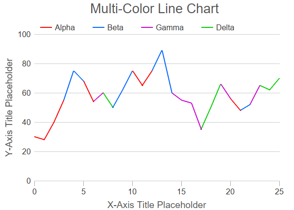

This example demonstrates a line chart with line segments of different colors.
In this example, each line segment has a type specified in the pointType array. Note that with N data points, there will only be (N - 1) line segments. So the pointType array size is one less than the data point array size.
A loop is used to separate the line segments by type into different line layers, The line layers are configured with different colors and names. This generates the multi-color line and the legend entries.
The following is the command line version of the code in "cppdemo/multicolorline". The MFC version of the code is in "mfcdemo/mfcdemo". The Qt Widgets version of the code is in "qtdemo/qtdemo". The QML/Qt Quick version of the code is in "qmldemo/qmldemo".
#include "chartdir.h"
int main(int argc, char *argv[])
{
// Data points for the line chart
double dataX[] = {0, 1, 2, 3, 4, 5, 6, 7, 8, 9, 10, 11, 12, 13, 14, 15, 16, 17, 18, 19, 20, 21,
22, 23, 24, 25};
const int dataX_size = (int)(sizeof(dataX)/sizeof(*dataX));
double dataY[] = {30, 28, 40, 55, 75, 68, 54, 60, 50, 62, 75, 65, 75, 89, 60, 55, 53, 35, 50,
66, 56, 48, 52, 65, 62, 70};
const int dataY_size = (int)(sizeof(dataY)/sizeof(*dataY));
// The data point type. The color of the line segment will be based on the starting point type
// of the segment. In this example, we have 4 point types for 4 different colors. Note that for
// a line with N points, there will be (N - 1) line segments, so we only need (N - 1) values in
// the point type array.
int pointType[] = {0, 0, 0, 1, 1, 0, 2, 3, 1, 1, 0, 0, 1, 1, 2, 2, 2, 3, 3, 2, 0, 1, 2, 3, 3};
const int pointType_size = (int)(sizeof(pointType)/sizeof(*pointType));
int colors[] = {0xff0000, 0x0066ff, 0xcc00cc, 0x00cc00};
const int colors_size = (int)(sizeof(colors)/sizeof(*colors));
const char* pointTypeLabels[] = {"Alpha", "Beta", "Gamma", "Delta"};
const int pointTypeLabels_size = (int)(sizeof(pointTypeLabels)/sizeof(*pointTypeLabels));
// Create a XYChart object of size 600 x 430 pixels
XYChart* c = new XYChart(600, 430);
// Set default text color to dark grey (0x333333)
c->setColor(Chart::TextColor, 0x333333);
// Add a title box using grey (0x555555) 20pt Arial font
c->addTitle(" Multi-Color Line Chart", "Arial", 20, 0x555555);
// Set the plotarea at (70, 70) and of size 500 x 300 pixels, with transparent background and
// border and light grey (0xcccccc) horizontal grid lines
c->setPlotArea(70, 70, 500, 300, Chart::Transparent, -1, Chart::Transparent, 0xcccccc);
// Add a legend box with horizontal layout above the plot area at (70, 35). Use 12pt Arial font,
// transparent background and border, and line style legend icon.
LegendBox* b = c->addLegend(70, 35, false, "Arial", 12);
b->setBackground(Chart::Transparent, Chart::Transparent);
b->setLineStyleKey();
// Set axis label font to 12pt Arial
c->xAxis()->setLabelStyle("Arial", 12);
c->yAxis()->setLabelStyle("Arial", 12);
// Set the x and y axis stems to transparent, and the x-axis tick color to grey (0xaaaaaa)
c->xAxis()->setColors(Chart::Transparent, Chart::TextColor, Chart::TextColor, 0xaaaaaa);
c->yAxis()->setColors(Chart::Transparent);
// Set the major/minor tick lengths for the x-axis to 10 and 0.
c->xAxis()->setTickLength(10, 0);
// For the automatic axis labels, set the minimum spacing to 80/40 pixels for the x/y axis.
c->xAxis()->setTickDensity(80);
c->yAxis()->setTickDensity(40);
// Add a title to the y axis using dark grey (0x555555) 14pt Arial font
c->xAxis()->setTitle("X-Axis Title Placeholder", "Arial", 14, 0x555555);
c->yAxis()->setTitle("Y-Axis Title Placeholder", "Arial", 14, 0x555555);
// In ChartDirector, each line layer can only have one line color, so we use 4 line layers to
// draw the 4 different colors of line segments.
// In general, the line segments for each color will not be continuous. In ChartDirector,
// non-continuous line segments can be achieved by inserting NoValue points. To allow for these
// extra points, we use a buffer twice the size of the original data arrays.
const int lineX_size = dataX_size * 2;
double lineX[lineX_size];
const int lineY_size = dataY_size * 2;
double lineY[lineY_size];
// Use a loop to create a line layer for each color
for(int i = 0; i < colors_size; ++i) {
int n = 0;
for(int j = 0; j < dataX_size; ++j) {
// We include data points of the target type in the line layer.
if ((j < pointType_size) && (pointType[j] == i)) {
lineX[n] = dataX[j];
lineY[n] = dataY[j];
n = n + 1;
} else if ((j > 0) && (pointType[j - 1] == i)) {
// If the current point is not of the target, but the previous point is of the
// target type, we still need to include the current point in the line layer, as it
// takes two points to draw a line segment. We also need an extra NoValue point so
// that the current point will not join with the next point.
lineX[n] = dataX[j];
lineY[n] = dataY[j];
n = n + 1;
lineX[n] = dataX[j];
lineY[n] = Chart::NoValue;
n = n + 1;
}
}
// Draw the layer that contains all segments of the target color
LineLayer* layer = c->addLineLayer(DoubleArray(lineY, n), colors[i], pointTypeLabels[i]);
layer->setXData(DoubleArray(lineX, n));
layer->setLineWidth(2);
}
// Output the chart
c->makeChart("multicolorline.png");
//free up resources
delete c;
return 0;
}
© 2023 Advanced Software Engineering Limited. All rights reserved.